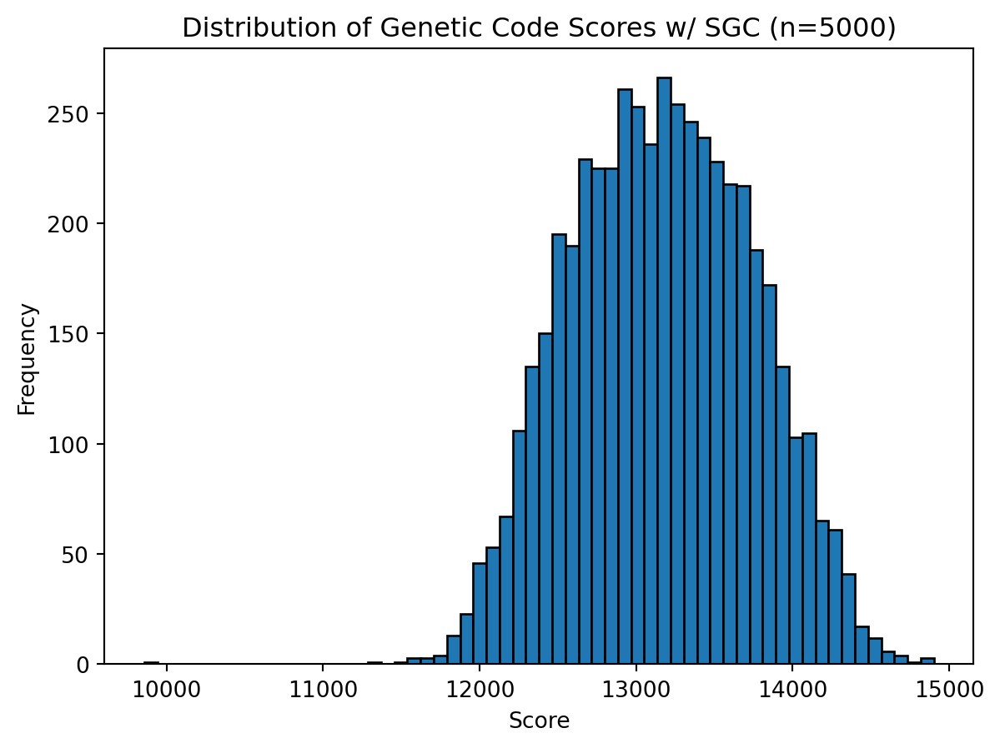
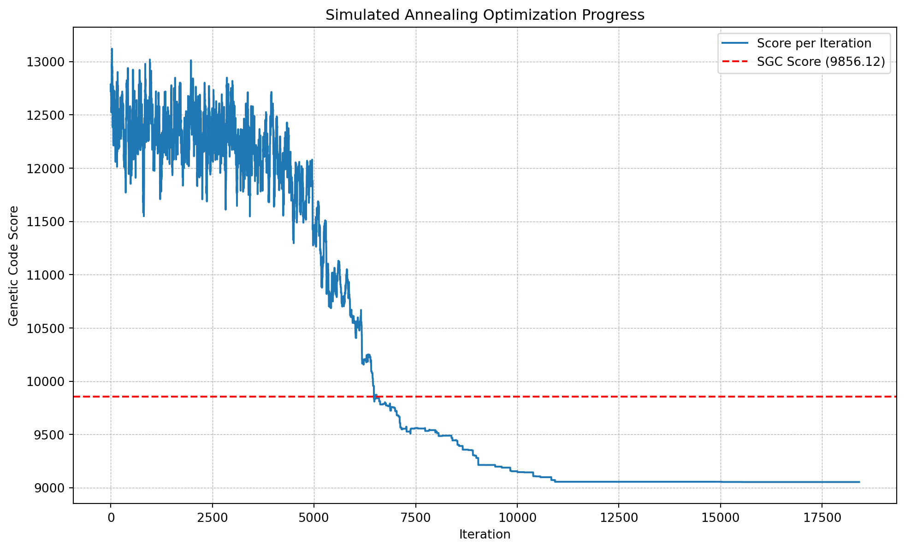
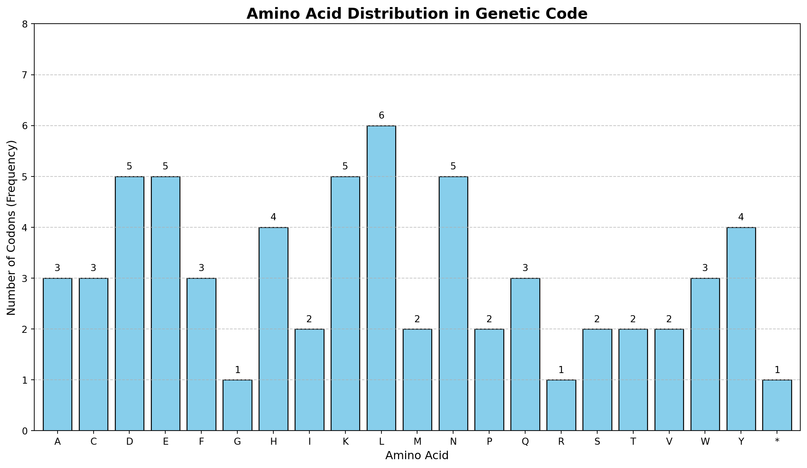

import sys
import statistics as stats
import pandas as pd
import numpy as np
import random
from itertools import product
import matplotlib.pyplot as plt
from collections import Counter
BASE_DIR = "~/Documents/School/CSB195"
STOP_CODON_LIMIT = 3
SGC = {
'ATA': 'I', 'ATC': 'I', 'ATT': 'I', 'ATG': 'M',
'ACA': 'T', 'ACC': 'T', 'ACG': 'T', 'ACT': 'T',
'AAC': 'N', 'AAT': 'N', 'AAA': 'K', 'AAG': 'K',
'AGC': 'S', 'AGT': 'S', 'AGA': 'R', 'AGG': 'R',
'CTA': 'L', 'CTC': 'L', 'CTG': 'L', 'CTT': 'L',
'CCA': 'P', 'CCC': 'P', 'CCG': 'P', 'CCT': 'P',
'CAC': 'H', 'CAT': 'H', 'CAA': 'Q', 'CAG': 'Q',
'CGA': 'R', 'CGC': 'R', 'CGG': 'R', 'CGT': 'R',
'GTA': 'V', 'GTC': 'V', 'GTG': 'V', 'GTT': 'V',
'GCA': 'A', 'GCC': 'A', 'GCG': 'A', 'GCT': 'A',
'GAC': 'D', 'GAT': 'D', 'GAA': 'E', 'GAG': 'E',
'GGA': 'G', 'GGC': 'G', 'GGG': 'G', 'GGT': 'G',
'TCA': 'S', 'TCC': 'S', 'TCG': 'S', 'TCT': 'S',
'TTC': 'F', 'TTT': 'F', 'TTA': 'L', 'TTG': 'L',
'TAC': 'Y', 'TAT': 'Y', 'TAA': '*', 'TAG': '*',
'TGC': 'C', 'TGT': 'C', 'TGA': '*', 'TGG': 'W',
}Report 1
Determining the efficacy of the Standard Genetic Code against Point-Form Mutations
Last updated October 10, 2025.
Source
1 Overview
- This project’s goal is to evaluate how optimal the Standard Genetic Code (SGC) is when compared to other random genetic codes.
- The analysis displays that the SGC is much more well optimized against point mutations than random alternatives are.
- Therefore, the SGC must have evolved under selection to prevent against such mutations.
2 Specification
My specification for the primary experiment is below, I will summarize it briefly underneath.
The goal of this project is to compare the Standard Genetic Code (SGC) to other, randomly generated codes that are biologically plausible. We will do so by the following general specification. Variables: - BASE_DIR = base directory of project - aaSimilarity = PCAs of amino acid similarities - dtable = lookup table of single letter amino acids showing distance from each other - SGC = standard genetic code of form: {'CODON': "AMINO ACID"} where amino acids are in single letter form Functions: - ALREADY BUILT! construct_aa_table(dat: pd.DataFrame) -> pd.DataFrame - Constructs a pandas dataframe from imported csv stored in aaSimilarity, containing a 21x21 matrix of Euclidean distances between amino acids The function calculates the distance between 20 standard amino acids based on 12 principal components and adds a 'STOP' codon. - ALREADY BUILT! aaSim(aa1: str, aa2: str) -> np.float64 - Looks up the values in the dataframe constructed earlier in `dtable` and returns the applicable stored distance between aa1, aa2; amino acids - create_genetic_code(sc_limit: int) -> dict - Creates a random genetic code config that maps all 64 codons to all 20 amino acids (in single letter form) + at least one stop codon (allow 1-`sc_limit` stop codons). Return as a python dict e.g. {'ATA': 'A', 'ATT': 'W'} - score_gc(gc: dict) -> np.float64 - Provides a 'score' of the provided genetic code in `gc`. It must calculate the cost of every possible codon mutation (3 codon mutations per 3 codons), then use aaSim() between the gc-mapped amino acid of the original codon and the gc-mapped amino acid of the mutated codon to determine what the distance between each mutation is. Sum up the distances of every possible mutation and return as np.float64construct_aa_table() is a function that creates a
pandasdataframe using the data from class. This used to be written in R but I ported it to python with the help of my AI. It creates a table showing similarity between amino acids.aaSim() uses the dataframe from above as a lookup table to quickly get the similarity value between two amino acids passed into func
create_genetic_code() generates a random valid genetic code. Valid in this case means all 20 amino acids are mapped to at least one codon, and one stop codon is mapped.
score_gc() uses aaSim() to measure the point mutations of every codon to see how similar/different the post-mutation amino acid is to the pre-mutated amino acid
- The benchmark set in class is
9856.116which is the score of the SGC.
- The benchmark set in class is
3 Setting Up the Environment
3.1 Assumptions
- I define my computable measure of tolerance of point mutations as a score that, for any genetic code, determines all possible point shift mutations for each codon, calculates the distances between the original and mutated amino acid (using lookup table) and sums the distances to return the score.
- I explain below how the function create_genetic_code() creates a valid genetic code. To summarize: 20 amino acids are assigned to 20 codons, a random amount of stop codons (as specified) are added, the rest are filled with random amino acids. This ensures the code is biologically useful as it maps all amino acids.
- There are other constraints that exist in biology, like tRNA availability and codon usage bias in organisms, however we ignore these in this experiment for simplicity.
- This experiment will be conducted by building the functions and logic, using
3.2 Some constants
I import some packages and add some constants to begin. STOP_CODON_LIMIT determines the max of how many stop codons the generator will try to assign.
Let’s also create a function (with the help of my AI) to nicely display any genetic codes we create
def format_genetic_code_table(gc: dict) -> pd.DataFrame: """Formats a genetic code dictionary into a standard 4x4 table.""" bases = ['T', 'C', 'A', 'G'] aa_map = { 'A': 'Ala', 'R': 'Arg', 'N': 'Asn', 'D': 'Asp', 'C': 'Cys', 'E': 'Glu', 'Q': 'Gln', 'G': 'Gly', 'H': 'His', 'I': 'Ile', 'L': 'Leu', 'K': 'Lys', 'M': 'Met', 'F': 'Phe', 'P': 'Pro', 'S': 'Ser', 'T': 'Thr', 'W': 'Trp', 'Y': 'Tyr', 'V': 'Val', '*': '*' } table_data = [] for first_base in bases: row = [] for second_base in bases: cell_text = [] for third_base in bases: codon = first_base + second_base + third_base single_letter_aa = gc.get(codon, '?') three_letter_aa = aa_map.get(single_letter_aa, '???') cell_text.append(f"{three_letter_aa} ({third_base})") row.append("<br>".join(cell_text)) table_data.append(row) df = pd.DataFrame(table_data, index=pd.Index(bases, name="First Base"), columns=pd.Index(bases, name="Second Base")) from IPython.display import HTML return HTML(df.to_html(escape=False))And a helper function to show the amino acid distribution for any inputted code.
def plot_aa_distribution(gc: dict, title: str = 'Amino Acid Distribution in Genetic Code'): """ Renders a bar chart showing the frequency of each amino acid in a given genetic code. The chart layout is kept consistent for easy comparison between different codes. Args: gc: A dictionary mapping 64 codons to single-letter amino acid codes (e.g., 'A', 'C', '*'). title: The title for the chart. """ # Define a fixed order for amino acids to ensure consistent chart layouts aa_order = list('ACDEFGHIKLMNPQRSTVWY') + ['*'] # Count the occurrences of each amino acid in the genetic code counts = Counter(gc.values()) # Create a pandas Series from the counts, reindexing to the fixed order # This ensures that all amino acids are present in the data, with a count of 0 if absent. dist_series = pd.Series(counts).reindex(aa_order, fill_value=0) # Plotting fig, ax = plt.subplots(figsize=(14, 7)) dist_series.plot(kind='bar', ax=ax, color='skyblue', edgecolor='black', width=0.8) # --- Chart Formatting for Clarity and Consistency --- ax.set_title(title, fontsize=16, weight='bold') ax.set_xlabel('Amino Acid', fontsize=12) ax.set_ylabel('Number of Codons (Frequency)', fontsize=12) # Set a fixed y-axis limit for direct visual comparison of codon counts. # A safe upper limit is 8, as it's rare for one amino acid to have more codons. ax.set_ylim(0, 8) ax.set_yticks(range(9)) # Rotate x-axis labels for better readability plt.xticks(rotation=0) # Add a grid for easier reading of values ax.grid(axis='y', linestyle='--', alpha=0.7) # Add count labels on top of each bar for i, count in enumerate(dist_series): if count > 0: ax.text(i, count + 0.1, str(count), ha='center', va='bottom', fontsize=10) # Ensure a clean layout plt.tight_layout() # Display the plot plt.show()
3.3 Importing the data
Since the original data was in .Rds format, I used R’s write.csv() command to export
dat/aaFeatureSpace.2025.Rdstodat/aaFeatureSpace.csvPython accesses this data and constructs a similarity lookup table using the following code: AI Source
Show the code
def construct_aa_table(dat: pd.DataFrame) -> pd.DataFrame: """ Constructs a 21x21 matrix of Euclidean distances between amino acids. The function calculates the distance between 20 standard amino acids based on 12 principal components and adds a pseudo 'STOP' codon. Args: dat: A pandas DataFrame with amino acid single-letter codes as the index and 12 principal components (PC1-PC12) as columns. Returns: A 21x21 pandas DataFrame containing the Euclidean distances between all 20 amino acids and a 'STOP' codon. """ # --- FIX --- # Ensure that the dataframe values are numeric before calculations # This prevents the TypeError during vector subtraction. dat_numeric = dat.apply(pd.to_numeric, errors='coerce') # It's good practice to check if coercion created any NaN values if dat_numeric.isnull().values.any(): print("Warning: Non-numeric values were found and converted to NaN.") # Define the constant for calculating the distance to the stop codon STOP_DIST = 1.5 # Extract the list of amino acids from the input DataFrame's index amino_acids = dat_numeric.index.tolist() # Initialize an empty square DataFrame to hold the distances dist_matrix = pd.DataFrame(index=amino_acids, columns=amino_acids, dtype=float) # Calculate the Euclidean distance for each pair of amino acids for aa1 in amino_acids: for aa2 in amino_acids: # Retrieve the 12-dimensional vectors for the two amino acids vec1 = dat_numeric.loc[aa1].values vec2 = dat_numeric.loc[aa2].values # Compute the Euclidean distance and store it in the matrix distance = np.linalg.norm(vec1 - vec2) dist_matrix.loc[aa1, aa2] = distance # Find the maximum distance value among the amino acids max_dist = dist_matrix.values.max() # Calculate the distance for the stop codon stop_codon_dist = STOP_DIST * max_dist # Add a 'STOP' column and row to the matrix stop_label = '*' dist_matrix[stop_label] = stop_codon_dist dist_matrix.loc[stop_label] = stop_codon_dist # The distance from 'STOP' to itself is 0 dist_matrix.loc[stop_label, stop_label] = 0.0 return dist_matrix aaSimilarity = pd.read_csv(f"{BASE_DIR}/dat/aaFeatureSpace.csv", index_col=0) dtable = construct_aa_table(aaSimilarity)Now the lookup table is constructed nicely and stored in
dtable:dtableA C D E F G H I K L ... N P Q R S T V W Y * A 0.000000 18.176334 21.211890 21.923157 22.371972 11.482274 18.900629 19.645559 27.036963 17.392675 ... 18.462433 19.083326 19.461327 29.894757 10.715891 10.600212 14.435550 28.323295 23.341264 53.935761 C 18.176334 0.000000 28.319709 29.728459 20.041857 25.054519 21.739702 17.581695 33.867608 17.658081 ... 25.926758 27.312201 27.016538 33.663847 22.000385 20.114841 13.842399 25.908648 22.289136 53.935761 D 21.211890 28.319709 0.000000 7.859468 32.456299 23.219087 18.435790 32.599804 18.891600 30.707916 ... 11.938848 20.851585 11.273871 21.535519 13.592779 15.809162 28.758401 33.169889 25.982454 53.935761 E 21.923157 29.728459 7.859468 0.000000 31.412447 25.289262 17.162447 31.094875 15.017994 28.952665 ... 12.332626 22.363162 8.935904 18.980827 16.066922 17.324399 27.976748 31.759465 24.054114 53.935761 F 22.371972 20.041857 32.456299 31.412447 0.000000 31.582276 21.746057 11.326064 34.060936 9.293158 ... 28.611496 28.291862 27.837117 32.524010 27.225385 23.223101 14.060650 12.321010 14.091799 53.935761 G 11.482274 25.054519 23.219087 25.289262 31.582276 0.000000 25.097377 28.775849 30.197159 27.214751 ... 20.767591 20.145725 23.307118 33.426858 13.828360 17.115369 23.954105 35.957174 30.544664 53.935761 H 18.900629 21.739702 18.435790 17.162447 21.746057 25.097377 0.000000 23.465681 20.076748 21.236117 ... 14.913534 20.765900 14.389646 19.461579 16.819221 15.078192 20.613181 22.622245 15.307727 53.935761 I 19.645559 17.581695 32.599804 31.094875 11.326064 28.775849 23.465681 0.000000 34.227760 6.733640 ... 28.616005 27.744302 28.779372 34.776820 26.230282 22.495364 7.080977 19.449383 19.319285 53.935761 K 27.036963 33.867608 18.891600 15.017994 34.060936 30.197159 20.076748 34.227760 0.000000 32.194150 ... 17.420960 23.411609 12.381269 16.471912 20.806245 20.609675 31.602886 32.079634 25.243565 53.935761 L 17.392675 17.658081 30.707916 28.952665 9.293158 27.214751 21.236117 6.733640 32.194150 0.000000 ... 27.084261 25.801083 26.292854 32.900377 24.287408 20.874809 8.152492 18.577124 16.909402 53.935761 M 17.359260 15.066169 27.880345 26.681749 11.131475 27.144879 17.351416 13.573533 29.369891 8.799197 ... 24.597132 24.960747 23.340748 29.676611 22.260555 19.448368 12.687781 17.599251 15.416300 53.935761 N 18.462433 25.926758 11.938848 12.332626 28.611496 20.767591 14.913534 28.616005 17.420960 27.084261 ... 0.000000 19.324180 7.580542 19.788073 10.776410 13.261159 25.619874 29.981411 22.550224 53.935761 P 19.083326 27.312201 20.851585 22.363162 28.291862 20.145725 20.765900 27.744302 23.411609 25.801083 ... 19.324180 0.000000 20.001033 28.278856 16.696112 17.105724 24.659890 30.363342 24.694739 53.935761 Q 19.461327 27.016538 11.273871 8.935904 27.837117 23.307118 14.389646 28.779372 12.381269 26.292854 ... 7.580542 20.001033 0.000000 16.300134 12.449408 13.382975 25.742964 28.484868 20.051376 53.935761 R 29.894757 33.663847 21.535519 18.980827 32.524010 33.426858 19.461579 34.776820 16.471912 32.900377 ... 19.788073 28.278856 16.300134 0.000000 24.334498 23.602768 32.849640 31.215589 24.343017 53.935761 S 10.715891 22.000385 13.592779 16.066922 27.225385 13.828360 16.819221 26.230282 20.806245 24.287408 ... 10.776410 16.696112 12.449408 24.334498 0.000000 6.167702 21.321638 30.880924 23.941856 53.935761 T 10.600212 20.114841 15.809162 17.324399 23.223101 17.115369 15.078192 22.495364 20.609675 20.874809 ... 13.261159 17.105724 13.382975 23.602768 6.167702 0.000000 17.554950 27.092283 20.496910 53.935761 V 14.435550 13.842399 28.758401 27.976748 14.060650 23.954105 20.613181 7.080977 31.602886 8.152492 ... 25.619874 24.659890 25.742964 32.849640 21.321638 17.554950 0.000000 22.190822 19.065321 53.935761 W 28.323295 25.908648 33.169889 31.759465 12.321010 35.957174 22.622245 19.449383 32.079634 18.577124 ... 29.981411 30.363342 28.484868 31.215589 30.880924 27.092283 22.190822 0.000000 14.294620 53.935761 Y 23.341264 22.289136 25.982454 24.054114 14.091799 30.544664 15.307727 19.319285 25.243565 16.909402 ... 22.550224 24.694739 20.051376 24.343017 23.941856 20.496910 19.065321 14.294620 0.000000 53.935761 * 53.935761 53.935761 53.935761 53.935761 53.935761 53.935761 53.935761 53.935761 53.935761 53.935761 ... 53.935761 53.935761 53.935761 53.935761 53.935761 53.935761 53.935761 53.935761 53.935761 0.000000 21 rows × 21 columns
3.4 Generator and Scorer
Now we can define the generator function with the following: AI source
Show the code
def create_genetic_code(sc_limit: int) -> dict: """ Creates a random genetic code config that maps all 64 codons to all 20 amino acids and at least one stop codon. Args: sc_limit: The maximum number of stop codons allowed (the actual number will be chosen randomly between 1 and sc_limit). Returns: A dictionary mapping each of the 64 codons to a single-letter amino acid code or a stop codon ('*'). Raises: ValueError: If sc_limit is not within a reasonable range (1 to 10). """ # Validate the stop codon limit to a sensible range if not 1 <= sc_limit <= 10: raise ValueError("sc_limit must be between 1 and 10 for practical genetic codes.") # Define the building blocks for the genetic code bases = ['A', 'T', 'G', 'C'] amino_acids = list("ACDEFGHIKLMNPQRSTVWY") # 20 standard amino acids stop_symbol = '*' # 1. Generate all 64 possible codons all_codons = [''.join(p) for p in product(bases, repeat=3)] random.shuffle(all_codons) # 2. Determine the number of stop codons num_stop_codons = random.randint(1, sc_limit) # 3. Create the pool of assignments (amino acids + stops) # Ensure all 20 amino acids are present at least once assignments = amino_acids.copy() # Add the stop codons assignments.extend([stop_symbol] * num_stop_codons) # Fill the remaining slots with random amino acids to reach 64 total assignments remaining_slots = 64 - len(assignments) assignments.extend(random.choices(amino_acids, k=remaining_slots)) # Shuffle the assignments to ensure randomness random.shuffle(assignments) # 4. Create the dictionary by mapping codons to assignments genetic_code = dict(zip(all_codons, assignments)) return genetic_codeAnd we can see that running this function generates us a nice randomly assigned genetic code:
test_code = create_genetic_code(2) # with max 2 stop codons format_genetic_code_table(test_code) # display nicelySecond Base T C A G First Base T Pro (T)
Met (C)
Asn (A)
Tyr (G)Gly (T)
Thr (C)
Ile (A)
Trp (G)Val (T)
Trp (C)
Ala (A)
Gln (G)Glu (T)
Arg (C)
Trp (A)
Gly (G)C * (T)
Asn (C)
Gly (A)
Tyr (G)His (T)
Ile (C)
Pro (A)
Gly (G)Glu (T)
Ile (C)
Tyr (A)
His (G)Ile (T)
Leu (C)
Pro (A)
Arg (G)A Phe (T)
Val (C)
Thr (A)
Ser (G)Ile (T)
Cys (C)
Ser (A)
Trp (G)Ala (T)
Leu (C)
Lys (A)
Phe (G)Gly (T)
Cys (C)
Tyr (A)
Arg (G)G Trp (T)
Phe (C)
Gln (A)
Ala (G)Met (T)
Val (C)
Gln (A)
Asp (G)Glu (T)
Gln (C)
Ala (A)
Glu (G)Lys (T)
Asn (C)
Ser (A)
Gln (G)Next is the scorer function, defined as follows: AI source
Show the code
def score_gc(gc: dict) -> np.float64: """ Calculates a 'robustness' score for a genetic code. The score is the sum of physicochemical distances between amino acids resulting from all possible single-nucleotide point mutations across all 64 codons. A lower score indicates a more robust code where mutations tend to result in similar amino acids. Args: gc: A dictionary mapping 64 codons to single-letter amino acid codes. dtable: A DataFrame containing the pairwise distances between amino acids, as created by the `construct_aa_table` function. Returns: A np.float64 value representing the total cost of all possible mutations. Raises: ValueError: If a codon in the genetic code is not found in the distance table. """ bases = ['A', 'T', 'G', 'C'] total_distance_cost: float = 0.0 # Generate all 64 codons all_codons = [''.join(p) for p in product(bases, repeat=3)] for original_codon in all_codons: # Get the amino acid for the original, unmutated codon original_aa = gc.get(original_codon) if original_aa is None: raise ValueError(f"Codon '{original_codon}' not found in the provided genetic code.") # Iterate through each of the 3 positions in the codon for i in range(3): original_base = original_codon[i] # Iterate through each possible mutation at that position for mutated_base in bases: # We only care about actual mutations, not silent changes if original_base != mutated_base: # Construct the mutated codon mutated_codon_list = list(original_codon) mutated_codon_list[i] = mutated_base mutated_codon = "".join(mutated_codon_list) # Get the amino acid for the new, mutated codon mutated_aa = gc.get(mutated_codon) if mutated_aa is None: raise ValueError(f"Mutated codon '{mutated_codon}' not found in the provided genetic code.") # Use aaSim to get the distance and add it to the total cost # Note: We are directly using the dtable here as aaSim is just a lookup distance: np.float64 = dtable.at[original_aa, mutated_aa] total_distance_cost += distance return np.float64(total_distance_cost)To ensure this function works, we will test the Standard Genetic Code against the baseline in the next section
3.5 Ensuring Baseline
The baseline score for the SGC was defined in class as
9856.116. In order to ensure nothing has gone wrong, we will test our functions to see if it returns the same score.Since we already have the SGC defined in
SGCfrom the constants earlier, we will use that here.format_genetic_code_table(SGC)Second Base T C A G First Base T Phe (T)
Phe (C)
Leu (A)
Leu (G)Ser (T)
Ser (C)
Ser (A)
Ser (G)Tyr (T)
Tyr (C)
* (A)
* (G)Cys (T)
Cys (C)
* (A)
Trp (G)C Leu (T)
Leu (C)
Leu (A)
Leu (G)Pro (T)
Pro (C)
Pro (A)
Pro (G)His (T)
His (C)
Gln (A)
Gln (G)Arg (T)
Arg (C)
Arg (A)
Arg (G)A Ile (T)
Ile (C)
Ile (A)
Met (G)Thr (T)
Thr (C)
Thr (A)
Thr (G)Asn (T)
Asn (C)
Lys (A)
Lys (G)Ser (T)
Ser (C)
Arg (A)
Arg (G)G Val (T)
Val (C)
Val (A)
Val (G)Ala (T)
Ala (C)
Ala (A)
Ala (G)Asp (T)
Asp (C)
Glu (A)
Glu (G)Gly (T)
Gly (C)
Gly (A)
Gly (G)Scoring it provides us with the following:
score_gc(SGC)np.float64(9856.116291937447)Hooray! We can see the code has scored the Standard Genetic Code equal to the baseline!! (to an even more precise figure!).
4 Data
4.1 Comparing Random Codes to the SGC
Let’s create a helper function to generate and test random GCs called
gen_and_score(times); wheretimesis the amount of trials to run.Show the code
def gen_and_score(times: int) -> list: scores = [] while len(scores) < times: gc = create_genetic_code(STOP_CODON_LIMIT) scores.append(float(score_gc(gc))) return scoresNow, let’s generate 1000 random genetic codes, score them, and plot them on a graph.
attempts = 1000 scores = gen_and_score(attempts)plt.hist(scores, bins=40, edgecolor='black') plt.title(f'Distribution of Genetic Code Scores (n={attempts})') plt.xlabel('Score') plt.ylabel('Frequency') plt.show()This is nice! We get a nice bell curve, and we can see the scores average between 12,000 and 15,000. These scores are MUCH higher than the SGC’s score, however. Let’s plot the SCG score as well to visualize this.
scores.append(score_gc(SGC)) plt.hist(scores, bins=50, edgecolor='black') plt.title(f'Distribution of Genetic Code Scores w/ SGC (n={attempts})') plt.xlabel('Score') plt.ylabel('Frequency') plt.show()
Our random codes score significantly worse than the standard genetic code. Let’s try generating more codes (5000) to try to brute-force optimize…
attempts = 5000 scores = gen_and_score(attempts)plt.hist(scores, bins=40, edgecolor='black') plt.title(f'Distribution of Genetic Code Scores (n={attempts})') plt.xlabel('Score') plt.ylabel('Frequency') plt.show()
We get a wider distribution with more attempts, however when compared to the SGC:
scores.append(score_gc(SGC)) plt.hist(scores, bins=60, edgecolor='black') plt.title(f'Distribution of Genetic Code Scores w/ SGC (n={attempts})') plt.xlabel('Score') plt.ylabel('Frequency') plt.show()
We can clearly see that the Standard Genetic Code is extremely well optimized when compared to random genetic codes.
5 Optimization (extras)
5.1 Random “Optimization”
I tried to make an “optimization” function. Truly all it is is a while True loop that randomly generates codes, keeps score of the best one its found, and keeps going until the user keyboard interrupts. So it’s not really optimization, rather brute force.
Regardless, let’s see how low of a score it can find. Since this quarto document doesn’t have a way to signal interrupt, I will limit the function to 10000 runs.
def random_optimization(attempts) -> np.float64: best: dict = create_genetic_code(STOP_CODON_LIMIT) best_score = score_gc(best) tries = 0 while tries <= attempts: try: tries += 1 test = create_genetic_code(STOP_CODON_LIMIT) test_score = score_gc(test) if test_score < best_score: best = test.copy() best_score = test_score except KeyboardInterrupt: print(f"{tries} total tries") sys.exit() print(f"Best code: {best}") print(f"Best score: {best_score}") random_optimization(10000)Best code: {'TTT': 'T', 'GGT': 'V', 'AAT': 'I', 'GCT': 'H', 'AAA': 'I', 'ACT': 'P', 'TGC': 'I', 'AGC': 'E', 'GTG': 'Q', 'TAG': 'G', 'TGG': 'K', 'GGA': 'F', 'ACA': 'T', 'TTA': 'K', 'CGA': 'R', 'ATC': 'M', 'CCC': 'P', 'CCA': 'I', 'AAG': 'L', 'TGA': 'P', 'CCT': 'E', 'ACG': 'P', 'TCG': 'N', 'GCC': 'W', 'ATA': 'A', 'CAA': 'F', 'CGT': 'K', 'CGC': 'E', 'GTA': 'Q', 'TGT': 'E', 'CAC': 'H', 'AGA': 'K', 'ATT': 'N', 'CCG': 'G', 'CGG': '*', 'GAG': 'N', 'GCA': 'T', 'AGG': 'C', 'GAA': 'A', 'TAC': 'M', 'AAC': 'V', 'GAC': 'Y', 'GGC': 'M', 'GTT': 'K', 'TTG': 'N', 'TCC': 'S', 'CTG': 'T', 'CAG': 'S', 'GGG': 'H', 'CTT': 'Q', 'GTC': 'M', 'TAT': 'D', 'TCA': 'S', 'TTC': 'T', 'TAA': 'C', 'GAT': 'D', 'ATG': 'D', 'CAT': 'E', 'CTC': 'W', 'ACC': 'S', 'GCG': 'D', 'CTA': 'A', 'TCT': 'S', 'AGT': 'N'} Best score: 11420.356037821826I have no way of knowing the exact amount when the quarto doc renders, but in my testing I rarely got better than 11000. Let’s try 100,000 attempts…
random_optimization(100000)Best code: {'CGG': 'N', 'AAG': 'I', 'AAC': 'G', 'TAT': 'E', 'GTG': 'L', 'GGC': 'H', 'CTT': '*', 'TTC': 'F', 'TGC': 'F', 'TGA': 'L', 'GTT': 'Q', 'CCT': 'Q', 'GGG': 'N', 'ATT': 'A', 'AGT': 'I', 'ACC': 'N', 'GAA': 'M', 'CGT': 'I', 'CAA': 'K', 'AAT': 'W', 'CGC': 'H', 'TCG': 'C', 'TTT': 'E', 'TGG': 'Y', 'CCC': 'S', 'TCC': 'K', 'GGA': 'P', 'TAC': 'T', 'TAG': 'M', 'ATA': 'D', 'CTC': 'L', 'ACA': 'T', 'ACT': 'Q', 'CCG': 'S', 'GAG': 'C', 'TAA': 'M', 'GTC': 'H', 'GAT': 'M', 'GAC': 'R', 'ACG': 'A', 'GCT': 'T', 'GTA': 'Y', 'AGA': 'R', 'ATG': 'Y', 'AGG': 'N', 'CAT': 'D', 'CCA': 'L', 'GGT': 'V', 'CGA': 'L', 'TTG': 'M', 'GCA': 'S', 'TCA': 'A', 'CAG': 'M', 'AGC': 'Q', 'AAA': 'T', 'TTA': 'A', 'GCG': 'A', 'ATC': 'S', 'CTG': 'M', 'TGT': 'L', 'TCT': 'Q', 'CTA': 'F', 'CAC': 'S', 'GCC': 'E'} Best score: 10901.939353916418This has even more chance of randomly stumbling upon a valid genetic code, however in my testing it rarely gets any better than it did in 10,000 attempts. This significantly displays how unlikely the SGC’s highly optimized score is.
So let’s try something better.
5.2 Simulated Annealing
We discussed simulated annealing in class. I could NOT write this function myself, so I got Gemini 2.5 Pro to write it for me. My prompt was:
# PROMPT I created an example "optimization" function that attempts to find the lowest score: def random_optimization() -> np.float64: best: dict = create_genetic_code(STOP_CODON_LIMIT) best_score = score_gc(best) tries = 0 while True: try: tries += 1 test = create_genetic_code(STOP_CODON_LIMIT) test_score = score_gc(test) if test_score < best_score: best = test.copy() best_score = test_score print(f"New best! {best_score}") print(best) except KeyboardInterrupt: print(f"{tries} total tries") sys.exit() I would like a function similar to this that, rather than creating random genetic codes, generates one first and then performs "simulated annealing" to optimize the code intelligently.- And running it results in: AI Source
def simulated_annealing_optimization( stop_codon_limit: int, initial_temp: float = 10000.0, cooling_rate: float = 0.999, min_temp: float = 1e-4, max_iterations: int = 50000 ) -> tuple[list, list, list]: """ Optimizes a genetic code using a simulated annealing algorithm to minimize mutation cost. Args: stop_codon_limit: The maximum number of stop codons for creating new codes. initial_temp: The starting temperature for the annealing process. cooling_rate: The rate at which the temperature decreases. min_temp: The temperature at which to stop the process. max_iterations: The maximum number of iterations to run. Returns: A tuple containing the final best score and a list of scores at each iteration. """ # 1. Initialization current_code = create_genetic_code(stop_codon_limit) current_score = score_gc(current_code) best_code = current_code.copy() best_score = current_score # List to track the score at every iteration score_history = [current_score] print(f"Initial score: {best_score}") T = initial_temp iteration = 0 try: # 2. Main Loop while T > min_temp and iteration < max_iterations: iteration += 1 # 3. Generate a Neighbor State new_code = current_code.copy() codons = list(new_code.keys()) codon1, codon2 = random.sample(codons, 2) new_code[codon1], new_code[codon2] = new_code[codon2], new_code[codon1] # 4. Score the New State new_score = score_gc(new_code) # 5. Decide Whether to Accept the New State score_delta = new_score - current_score if score_delta < 0 or random.random() < np.exp(-score_delta / T): current_code = new_code current_score = new_score # Update the best-ever score if the current one is better if current_score < best_score: best_score = current_score best_code = current_code.copy() print(f"Iter {iteration} | Temp {T:.4f} | New best score: {best_score:.4f}") # Track the score of the accepted state for this iteration score_history.append(float(current_score)) # 6. Cool Down T *= cooling_rate except KeyboardInterrupt: print("\nOptimization stopped by user.") finally: print(f"\nFinished after {iteration} iterations.") print(f"Final best score: {best_score}") return (best_score, score_history, best_code) best_found_score, score_runs, best_found_code = simulated_annealing_optimization(1) def plot_optimization_progress(runs: list, sgc_score: float): plt.figure(figsize=(12, 7)) plt.plot(runs, linestyle='-', label='Score per Iteration') plt.axhline(y=sgc_score, color='r', linestyle='--', label=f'SGC Score ({sgc_score:.2f})') plt.title('Simulated Annealing Optimization Progress') plt.xlabel('Iteration') plt.ylabel('Genetic Code Score') plt.legend() plt.grid(True, which='both', linestyle='--', linewidth=0.5) plt.show() sgc_baseline_score = score_gc(SGC) plot_optimization_progress(score_runs, sgc_baseline_score)Initial score: 12372.079401860823 Iter 15 | Temp 9860.9064 | New best score: 12371.8847 Iter 212 | Temp 8096.8858 | New best score: 12351.4544 Iter 256 | Temp 7748.1764 | New best score: 12311.5163 Iter 257 | Temp 7740.4282 | New best score: 12179.7363 Iter 258 | Temp 7732.6878 | New best score: 12145.6108 Iter 698 | Temp 4979.0363 | New best score: 12117.9525 Iter 883 | Temp 4137.7154 | New best score: 12047.0104 Iter 899 | Temp 4072.0062 | New best score: 12037.7607 Iter 1590 | Temp 2039.6741 | New best score: 11920.5708 Iter 2064 | Temp 1269.4109 | New best score: 11761.9230 Iter 4112 | Temp 163.5769 | New best score: 11747.2051 Iter 4116 | Temp 162.9236 | New best score: 11679.7306 Iter 4120 | Temp 162.2729 | New best score: 11665.2736 Iter 4126 | Temp 161.3017 | New best score: 11631.1224 Iter 4132 | Temp 160.3363 | New best score: 11539.4542 Iter 4597 | Temp 100.6894 | New best score: 11506.9874 Iter 4816 | Temp 80.8771 | New best score: 11426.0930 Iter 4817 | Temp 80.7963 | New best score: 11371.8591 Iter 4820 | Temp 80.5541 | New best score: 11357.0222 Iter 4823 | Temp 80.3127 | New best score: 11344.2659 Iter 4826 | Temp 80.0720 | New best score: 11295.0432 Iter 4829 | Temp 79.8320 | New best score: 11255.5136 Iter 5199 | Temp 55.1325 | New best score: 11250.5399 Iter 5209 | Temp 54.5837 | New best score: 11248.2436 Iter 5244 | Temp 52.7054 | New best score: 11189.6858 Iter 5245 | Temp 52.6527 | New best score: 11112.4823 Iter 5250 | Temp 52.3899 | New best score: 11086.7683 Iter 5255 | Temp 52.1285 | New best score: 11070.5808 Iter 5258 | Temp 51.9723 | New best score: 10967.0100 Iter 5381 | Temp 45.9544 | New best score: 10928.6566 Iter 5446 | Temp 43.0609 | New best score: 10912.1827 Iter 5449 | Temp 42.9319 | New best score: 10837.8828 Iter 5460 | Temp 42.4620 | New best score: 10816.4406 Iter 5488 | Temp 41.2890 | New best score: 10808.8015 Iter 5557 | Temp 38.5348 | New best score: 10752.8332 Iter 5574 | Temp 37.8849 | New best score: 10743.7261 Iter 5590 | Temp 37.2832 | New best score: 10714.5227 Iter 5868 | Temp 28.2306 | New best score: 10713.8604 Iter 5872 | Temp 28.1178 | New best score: 10690.8884 Iter 5917 | Temp 26.8799 | New best score: 10598.3325 Iter 5941 | Temp 26.2422 | New best score: 10560.3261 Iter 5947 | Temp 26.0851 | New best score: 10483.9403 Iter 5955 | Temp 25.8772 | New best score: 10386.7225 Iter 6061 | Temp 23.2733 | New best score: 10380.2706 Iter 6063 | Temp 23.2268 | New best score: 10370.4082 Iter 6067 | Temp 23.1340 | New best score: 10345.4300 Iter 6079 | Temp 22.8580 | New best score: 10343.1673 Iter 6113 | Temp 22.0935 | New best score: 10289.9151 Iter 6158 | Temp 21.1208 | New best score: 10252.8197 Iter 6162 | Temp 21.0365 | New best score: 10232.9317 Iter 6180 | Temp 20.6610 | New best score: 10204.1849 Iter 6187 | Temp 20.5168 | New best score: 10162.7808 Iter 6194 | Temp 20.3736 | New best score: 10133.7249 Iter 6216 | Temp 19.9301 | New best score: 10114.5148 Iter 6265 | Temp 18.9766 | New best score: 10106.0416 Iter 6386 | Temp 16.8129 | New best score: 10062.5382 Iter 6389 | Temp 16.7625 | New best score: 10014.0053 Iter 6435 | Temp 16.0085 | New best score: 10001.2224 Iter 6469 | Temp 15.4731 | New best score: 9970.7323 Iter 6523 | Temp 14.6593 | New best score: 9927.6565 Iter 6577 | Temp 13.8883 | New best score: 9913.5893 Iter 6578 | Temp 13.8745 | New best score: 9898.7170 Iter 6604 | Temp 13.5182 | New best score: 9889.1792 Iter 6819 | Temp 10.9018 | New best score: 9889.0088 Iter 6842 | Temp 10.6538 | New best score: 9886.0255 Iter 6854 | Temp 10.5267 | New best score: 9875.2984 Iter 6860 | Temp 10.4637 | New best score: 9849.5208 Iter 6913 | Temp 9.9233 | New best score: 9842.7831 Iter 6961 | Temp 9.4580 | New best score: 9832.7832 Iter 6972 | Temp 9.3545 | New best score: 9828.7113 Iter 7002 | Temp 9.0779 | New best score: 9803.4960 Iter 7008 | Temp 9.0235 | New best score: 9798.6055 Iter 7049 | Temp 8.6609 | New best score: 9792.3815 Iter 7087 | Temp 8.3378 | New best score: 9761.2572 Iter 7132 | Temp 7.9707 | New best score: 9760.4469 Iter 7186 | Temp 7.5515 | New best score: 9659.8182 Iter 7192 | Temp 7.5063 | New best score: 9657.0629 Iter 7203 | Temp 7.4241 | New best score: 9652.1670 Iter 7292 | Temp 6.7916 | New best score: 9583.9723 Iter 7308 | Temp 6.6838 | New best score: 9568.2792 Iter 7328 | Temp 6.5514 | New best score: 9525.2606 Iter 7347 | Temp 6.4280 | New best score: 9519.1197 Iter 7428 | Temp 5.9276 | New best score: 9497.6751 Iter 7466 | Temp 5.7065 | New best score: 9490.8725 Iter 7534 | Temp 5.3312 | New best score: 9466.9073 Iter 7566 | Temp 5.1632 | New best score: 9464.9275 Iter 7576 | Temp 5.1118 | New best score: 9446.6144 Iter 7687 | Temp 4.5745 | New best score: 9438.7421 Iter 7926 | Temp 3.6016 | New best score: 9427.6479 Iter 7927 | Temp 3.5980 | New best score: 9398.6607 Iter 8189 | Temp 2.7683 | New best score: 9398.1500 Iter 8217 | Temp 2.6919 | New best score: 9384.2089 Iter 8229 | Temp 2.6597 | New best score: 9377.2121 Iter 8324 | Temp 2.4186 | New best score: 9358.1738 Iter 8442 | Temp 2.1492 | New best score: 9356.3802 Iter 8456 | Temp 2.1194 | New best score: 9331.5124 Iter 8479 | Temp 2.0711 | New best score: 9328.8700 Iter 8538 | Temp 1.9524 | New best score: 9320.0515 Iter 8585 | Temp 1.8627 | New best score: 9310.2985 Iter 8594 | Temp 1.8460 | New best score: 9307.7693 Iter 8646 | Temp 1.7525 | New best score: 9300.1163 Iter 8749 | Temp 1.5809 | New best score: 9289.9162 Iter 8750 | Temp 1.5793 | New best score: 9250.1911 Iter 8762 | Temp 1.5604 | New best score: 9245.6994 Iter 8796 | Temp 1.5082 | New best score: 9241.4399 Iter 9071 | Temp 1.1455 | New best score: 9196.8199 Iter 9258 | Temp 0.9500 | New best score: 9186.7269 Iter 9875 | Temp 0.5124 | New best score: 9174.7790 Iter 10175 | Temp 0.3796 | New best score: 9167.1638 Iter 10948 | Temp 0.1751 | New best score: 9129.4126 Iter 13020 | Temp 0.0220 | New best score: 9123.1791 Iter 13055 | Temp 0.0213 | New best score: 9095.3975 Finished after 18412 iterations. Final best score: 9095.397502217338
This is INCREDIBLY satisfying to watch happen, as once you hit a minimum point it quickly falls to a low value.
On the plot above, it’s clear that finding a code optimized better than the SGC isn’t that hard.
It’s important to note that this is only optimized by the standards of the scoring function. It’s possible that this code might suck by evolution’s true standards.
Let’s see what the codon map of this optimized code looks like:
format_genetic_code_table(best_found_code)Second Base T C A G First Base T Glu (T)
Gln (C)
Asn (A)
Asn (G)Asp (T)
Thr (C)
Val (A)
Thr (G)Asp (T)
Thr (C)
Val (A)
Cys (G)Glu (T)
Glu (C)
Glu (A)
Glu (G)C Pro (T)
Gly (C)
Val (A)
Gly (G)Pro (T)
Ala (C)
Val (A)
Thr (G)Pro (T)
Ala (C)
Val (A)
Cys (G)Ser (T)
Ser (C)
Ser (A)
Ser (G)A Trp (T)
Met (C)
Phe (A)
Tyr (G)Trp (T)
Met (C)
Ile (A)
Tyr (G)Trp (T)
Met (C)
Ile (A)
Cys (G)Trp (T)
Met (C)
Phe (A)
Tyr (G)G Lys (T)
Gln (C)
His (A)
His (G)Tyr (T)
Tyr (C)
Ile (A)
His (G)* (T)
Leu (C)
Ile (A)
Cys (G)Arg (T)
Arg (C)
Arg (A)
Arg (G)And compared to the SCG:
format_genetic_code_table(SGC)Second Base T C A G First Base T Phe (T)
Phe (C)
Leu (A)
Leu (G)Ser (T)
Ser (C)
Ser (A)
Ser (G)Tyr (T)
Tyr (C)
* (A)
* (G)Cys (T)
Cys (C)
* (A)
Trp (G)C Leu (T)
Leu (C)
Leu (A)
Leu (G)Pro (T)
Pro (C)
Pro (A)
Pro (G)His (T)
His (C)
Gln (A)
Gln (G)Arg (T)
Arg (C)
Arg (A)
Arg (G)A Ile (T)
Ile (C)
Ile (A)
Met (G)Thr (T)
Thr (C)
Thr (A)
Thr (G)Asn (T)
Asn (C)
Lys (A)
Lys (G)Ser (T)
Ser (C)
Arg (A)
Arg (G)G Val (T)
Val (C)
Val (A)
Val (G)Ala (T)
Ala (C)
Ala (A)
Ala (G)Asp (T)
Asp (C)
Glu (A)
Glu (G)Gly (T)
Gly (C)
Gly (A)
Gly (G)Since the Quarto document generates the code output on each render, it is impossible to draw conclusions based on the specific code displayed in the current version. However, in my testing the optimized codes generally only posessed 1 stop codon, whereas the SGC has 3.
- This would likely due to pressures outside the scope of this assignment, perhaps for preventing against frameshift mutations by providing more options of stop codons.
We can do some further analysis by comparing the amino acid frequency distribution between the SGC and the optimized code.
Let’s look at the SGC’s distribution:
plot_aa_distribution(SGC)We can see Leucine, Argenine and Serine have the most codon mappings in the SGC. What about our optimized code?
plot_aa_distribution(best_found_code)
Since Quarto rendering would find a new optimized code every time, it’s hard to predict what the distribution would exactly look like, but from my testing it’s generally a random mix, and doesn’t relate to the SGC’s distribution in any meaningful way
- This may be because there are other pressures involved in evolution but not looked at in this experiment which cause the SGC’s distribution to be optimal.
6 Conclusions
- The standard genetic code is clearly much better than a randomly generated genetic code.
- This implies it was likely selected under evolutionary pressure for its ability to resist point-form mutations as tested in this code, among other criteria.
- However, by the metric we have chosen, it is definitely possible to find a more optimized code, with the earlier function able to find codes with scores lower than 8800.
6.1 Limitations of the experiment
- It is definitely possible that these ‘optimized’ codes are not better than the SGC by other biological measures. A few of the limitations of this experiment (with some help identifying from the AI assistant) include:
- The scoring function only gives low scores to codes that protect against single point mutations. It does not prevent against other mutations, like frameshifts or indels.
- Amino acid similarity defined in
aaSim()might not be the most optimal metric to measure. - Other biological pressures on the genetic code may exist, such as:
- translational efficiency of the code
- available resources (tRNA, proteins)
7 Appendix
7.1 AI Chat Links
7.2 Preparing the report
- Preparing the report was relatively straightforward. I used my AI assistant to help me convert the dataset from R to Python. Then I used its help along with some of my own code to begin making aaSim(), and other functions.
- Writing the code (90% of the report) was the easiest part since I had access to AI. Using extremely specific prompts helped a lot, and it rarely gave me a poor result; likely because of prompts
- Working at a higher level is possible with AI but it definitely helps to still understand the lower levels of what’s going on so you can be specific in your prompts
- Most of my troubles were encountered in planning the assignment, and in understanding how Quarto works to translate what I wanted in my head into Quarto language.
- I decided against using AI to write Quarto-specific syntax since I feel like I’ll be using this platform a lot in the future. I opted to read the docs instead! I’ve shockingly missed doing that…
7.3 References
- Kawashima, S. “AAindex: Amino Acid Index Database.” Nucleic Acids Research 28, no. 1 (January 1, 2000): 374. https://doi.org/10.1093/nar/28.1.374.
- Kawashima, S., H. Ogata, and M. Kanehisa. “AAindex: Amino Acid Index Database.” Nucleic Acids Research 27, no. 1 (January 1, 1999): 368–69. https://doi.org/10.1093/nar/27.1.368.
- Kawashima, S., P. Pokarowski, M. Pokarowska, A. Kolinski, T. Katayama, and M. Kanehisa. “AAindex: Amino Acid Index Database, Progress Report 2008.” Nucleic Acids Research 36, no. Database (November 13, 2007): D202–5. https://doi.org/10.1093/nar/gkm998.
- Nakai, Kenta, Akinori Kidera, and Minoru Kanehisa. “Cluster Analysis of Amino Acid Indices for Prediction of Protein Structure and Function.” Protein Engineering Design and Selection 2, no. 2 (January 1, 1988): 93–100. https://doi.org/10.1093/protein/2.2.93.
- Tomii, Kentaro, and Minoru Kanehisa. “Analysis of Amino Acid Indices and Mutation Matrices for Sequence Comparison and Structure Prediction of Proteins.” Protein Engineering Design and Selection 9, no. 1 (January 1, 1996): 27–36. https://doi.org/10.1093/protein/9.1.27.
- Boris Steipe. “GitHub - Hyginn/CSB195: Code and Data for CSB195 Computational Biology Foundations, University of Toronto.” GitHub, n.d. https://github.com/hyginn/CSB195. https://github.com/hyginn/CSB195.
7.4 Self-Assessment
- 90%
| Grade | Collaborative Improvement | Knowledge Accuracy & Sources | Autonomous Voice |
|---|---|---|---|
| Outstanding | Sophisticated iterative refinement transforms initial ideas and AI responses into original insights | All knowledge claims meticulously verified and sourced; novel contributions clearly identified and well-supported | Student’s intellectual agency drives the process; personal perspective unmistakably present; prompting shows strategic depth |
| Excellent | Clear evidence of improving ideas and AI outputs through thoughtful iteration and strategic redirection | Appropriate sourcing; novel insights generally well-identified and supported | Strong personal perspective maintained; clear student agency in guiding dialogue |
| Good | Some improvement of initial ideas and AI responses; basic understanding of refinement process | Most claims appropriately sourced; some novel contributions identified though presentation may lack clarity | Personal perspective present though inconsistent; some evidence of strategic engagement |
| Adequate | Minimal improvement of ideas or AI responses; limited understanding of iterative possibilities | Basic sourcing attempted with notable gaps; uncertain judgment about citation requirements | Weak personal perspective; limited agency in guiding collaboration |
| Marginal | No clear evidence of improving ideas or AI responses; accepts outputs without refinement | Inadequate sourcing; poor judgment about verification responsibilities | Student agency largely absent; minimal personal perspective |
| Inadequate | No improvement process evident; complete reliance on initial AI outputs | No source verification; factual claims accepted without responsibility | Complete absence of student agency; work indistinguishable from pure AI output |